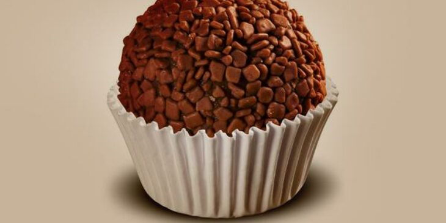

Brigadeiro

- Leite condensado: 400g
- Chocolate meio amargo: 200g
- Creme de leite: 150g
- Manteiga sem sal: 50g
- Açúcar mascavo: 50g
- Margarina sem sal: 25g
- Leite: 50ml
- Massa de brigadeiro em granulado
Modo de preparo
- Misture o leite condensado, chocolate meio amargo, creme de leite e margarina.
- Ajuste a consistência do brigadeiro conforme a receita do fornecedor.
- Recheie a base do brigadeiro com a mistura de brigadeiro.
- Leve à geladeira por pelo menos 1 hora antes de servir.
Beijinho
- Leite condensado: 400g
- Creme de leite: 150g
- Açúcar mascavo: 100g
- Farinha de trigo: 200g
- Óleo vegetal: 100ml
- Açúcar glass: 20g
- Coco ralado: 100g
Modo de preparo
- Bata o leite condensado, creme de leite e açúcar mascavo em um liquidificador.
- Acrescente a farinha de trigo e misture até formar uma massa.
- Aqueça o óleo e o açúcar glass em uma panela. Adicione o coco ralado e continue a cozinhar por alguns minutos.
- Transfira o creme de leite batido e a massa para a panela com o chocolate derretido. Misture bem e continue cozinhando até obter a consistência desejada.
- Despeje a massa em uma assadeira ou sobre papel alumínio para levar até o freezer.
- Leve à geladeira por pelo menos 2 horas antes de servir.